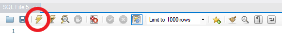

Télécharger MySQL Workbench, aller sur dev.mysql.com
Installer le logiciel MySQL Workbench sur votre ordinateur avec les configurations par défauts
Créer un identifiant et un mot de passe. Notez ces identifiants, vous en aurez besoin pour la suite !
Ouvrir le fichier avoter.sql (position : dossier du projet) dans MySQL Workbench et lancer le chargement du fichier (éclair jaune)
Insérer l'identifiant et le mot de passe de MySQL Workbench dans le fichier mysql.js (dans le dossier "mysql-test") au ligne 4 et 5 sous la forme :
Si cela n'est pas déjà fait, installer Node.js
Ouvrir le terminal de votre appareil et accéder au dossier du projet : cd /chemin_vers_le_projet
Entrer la commande suivante : npm install
En cas d'erreur, vérifier votre chemin d'accès et entrer la commande suivante : npm install mysql express bcrypt body-parser
Un dossier node_modules avec les dépendances du projet devrait être installé.
Entrer ensuite la commande : npm start (un statut "Connecté" s'affichera dans votre terminal pour indiquer que vous êtes bien connecté.e à la base de données)
Vous pouvez maintenant accéder au site à l'adresse suivante : http://localhost:3000/
Si vous voulez effectuer des tests sur les dates, il faudra modifier les infos de la table "tour" car c'est un administrateur qui gère l'ajout, la suppression et la modification des informations.
Nous n'avons pas affiché les résultats des élections car ils seront théoriquement communiqué sur les sites d'actualités.